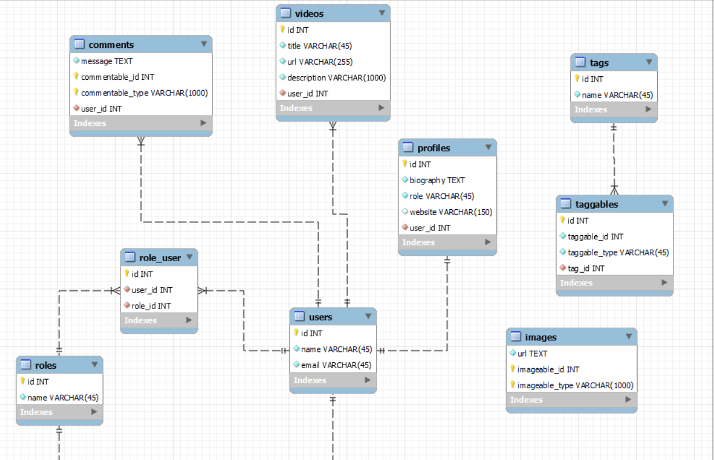

Para las explicaciones de esta seccion voy a trabajar en el nuevo proyecto "blog.test".
http://blog.test
Como el diagrama anterior resultante era para fines demostrativos, lo he modificado con el objetivo de que cumpla una funcion mas practica.
He eliminado la tabla address porque no era nesesaria para nuestro sistema de blog, y he agregado las tablas permission_role y permissions para crear un sistema de permisos en los roles.
Ahora vamos a empezar a crear las tablas usando las migraciones. Empezaremos por las mas sencillas: las que tienen una relacion 1:1.
Si nos centramos en la tabla users vemos que esta tiene una relacion 1:1 con la tabla profiles. Entonces cual de las dos deberiamos crear primero? La que no dependa o no tenga una clave externa de otra tabla, esta se le conoce como "entidad fuerte" (en este caso users) y a la otra dependiente como "entidad debil" (profiles).
Entonces voy a crear la tabla users. La migracion
php artisan make:migration create_users_table
Las columnas:
$table->id();
$table->string('name');
$table->string('email')->unique();
$table->timestamps();
php artisan make:migration create_profiles_table
$table->id();
$table->text('biography');
$table->string('title', 45);
$table->string('website', 150);
$table->foreignId('user_id')
->unique()
->constrained()
->onDelete('cascade')
->onUpdate('cascade');
$table->timestamps();
Este metodo permite recuperar un registro relacionado de otra tabla:
// Modelo User
use App\Models\Profile;
public function profile()
{
// Recupera el perfil asociado al usuario
return $this->hasOne(Profile::class);
}
Para acceder al perfil de un usuario debemos hacerlo como si fuera una propiedad, porque este metodo genera propiedades dinamicas:
$user = User::find(1);
$user->profile;
Esto lo hace por eficiencia, ya que asi se cargan todas las relaciones al inicio de manera anticipada y acceder despues es mas rapido.
Este metodo recupera un el registro al que esta asciada la clave externa.
// Modelo Profile
use App\Models\User;
public function user()
{
// Recupera el usuario asociado al perfil
return $this->belongsTo(User::class);
}
Para acceder al usuario de un perfil debemos hacerlo como si fuera una propiedad, porque este metodo genera propiedades dinamicas:
$profile = Profile::find(1);
$profile->user;
Esto lo hace por eficiencia, ya que asi se cargan todas las relaciones al inicio de manera anticipada y acceder despues es mas rapido.